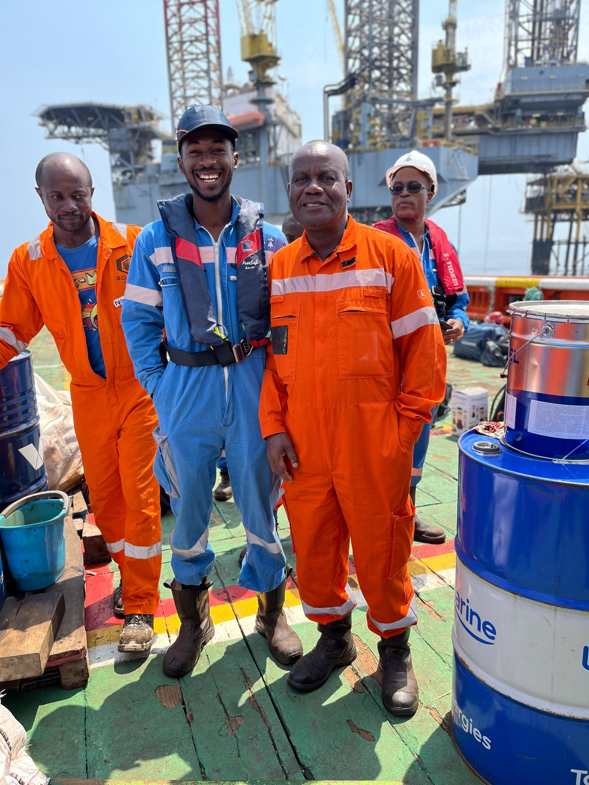
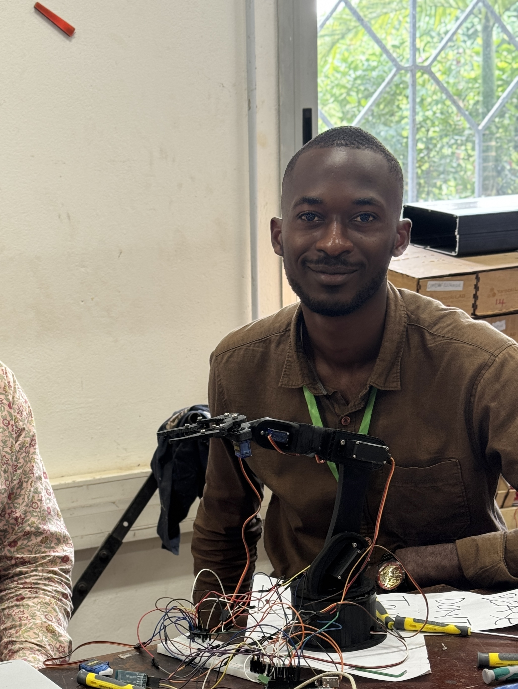
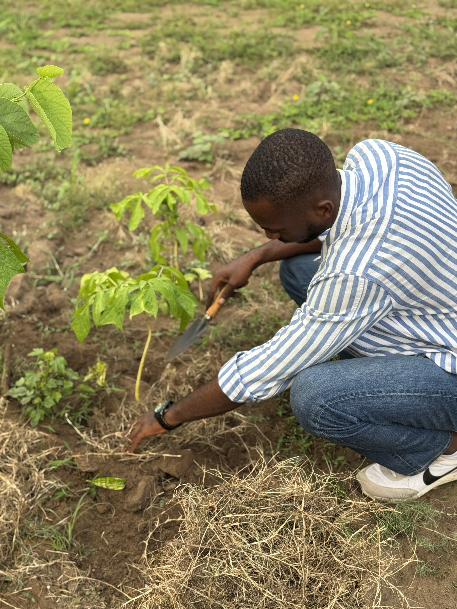

Dieunome Diamoneka
Engineering student with hands-on experience in industrial systems and innovation, building impactful solutions for energy and sustainable development.
Contact Me View My Resume
Engineering student with hands-on experience in industrial systems and innovation, building impactful solutions for energy and sustainable development.
Contact Me View My ResumeI am an engineering student at UCAC-ICAM with a strong background in industrial maintenance, instrumentation and production systems. With hands-on experience in the oil & gas sector and exposure to strategic and entrepreneurial thinking through the ESCP IRA program, I combine technical expertise with a broader vision of innovation and impact. I am particularly interested in developing solutions that improve industrial efficiency, access to resources, and sustainable development in Africa.
Experience in oil & gas operations and industrial environments, working on real production systems and technical operations in complex conditions.

Worked on offshore oil installations at Perenco, ensuring production monitoring and contributing to operational reliability in a high-risk environment.
Designed piping and structural plans and developed 3D models using AutoCAD during my internship at Ponticelli.
Contributed to the feasibility study of a digital credit solution in Senegal aimed at improving financial inclusion and access to funding.
I approach engineering problems through analytical thinking, field understanding and innovation. I focus on identifying real needs, designing efficient solutions and ensuring practical implementation.

Completed a 6-week humanitarian internship at Saint John Hospital, a community healthcare center providing accessible medical care to underserved populations. Contributed to maintaining a safe, clean and functional hospital environment, directly impacting patient well-being and supporting medical staff operations. This experience exposed me to the human realities of healthcare, where attention to detail, discipline and teamwork play a critical role in ensuring safety, dignity and quality of care. Beyond technical tasks, this immersion strengthened my sense of responsibility, empathy and commitment to social impact. It shaped my vision of engineering as a discipline that must serve people, communities and society.
General engineering background from UCAC-ICAM, with a specialization in innovation and entrepreneurship, providing strong foundations in industrial systems, problem-solving and project-oriented thinking. In parallel, exposure to international business and strategic environments through ESCP Business School (IRA program), developing a global perspective on leadership, decision-making and impact. Both experiences contribute to a multidisciplinary approach, combining technical expertise, innovation and strategic thinking.

My approach is driven by strong values that guide both my technical work and my interactions.

I am looking for opportunities in engineering projects related to energy, industrial systems and sustainable development. I am particularly interested in environments combining technical challenges, innovation and real-world impact.
I aim to develop sustainable engineering solutions focused on energy production and management. Energy plays a fundamental role in economic development, as it directly enables industrial growth, access to essential services and overall productivity. By combining industrial expertise, digital innovation and entrepreneurship, I seek to design efficient, resilient and scalable systems. My ambition is to contribute to the transition toward more sustainable energy models by improving efficiency, optimizing resource use and supporting the development of responsible infrastructures.
If you are looking for a motivated engineering student with a strong interest in energy and innovation, feel free to reach out.
Get in Touch